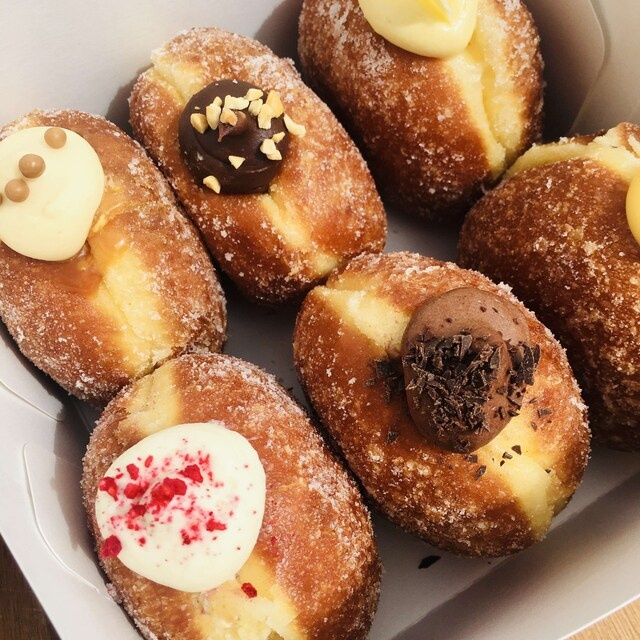

Grown Up Donuts

$$
Blueberry and Lime Cheesecake
Their doughnuts are to die for. Every week they change their flavours so you're experiencing something new with them
everytime. I, personally am a fan of their cheesecake flavoured doughnuts. When biting into their doughnuts, they are so
fluffy, airy and volumonous. The filling oozes out and you're hit with flavour. They are not overbaringly sweet, a
perfect doughnut for those who likes their desserts balanced.
grownupdonuts.nz
44 Henderson Valley Road, Henderson, Auckland 0612
022 090 0658